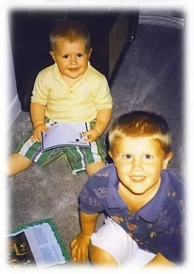

And now we know what a cabal of New York editors under pressure from a frightened FBI and nervous White House can do to the story of the greatest crime ever perpetrated by the Federal Bureau of Investigation -- they can gut it, reducing it almost to innocuousness, all to protect criminals who hide behind federal badges and to shield the politicians who sent them.
For you see, you may scan this article, you may study it, you may even read it backwards, but you will find no mention of PATCON. Nor will you find any mention of how PATCON touched upon, shaped the lives of and ultimately decided the fate of the dead at Ruby Ridge, Waco and Oklahoma City. For PATCON has been excised by the editorship of Tina Brown and sent down the memory hole as if it never existed.
Sources in advance of the story said that FBI was very afraid of this article. "They don't want PATCON mentioned," said one source. "Not ever, by anybody. Because it leads to OKBOMB (the FBI name for the Oklahoma City bombing case), Elohim City (Oklahoma, a Christian Identity community), (German undercover agent Andreas Carl) Strassmeier, the McVeigh-Strassmeier connection, the Aryan Republican Army, the whole shebang." A source out west told me that when he mentioned the name to a retired FBI agent, he was told to "stay away from that shit" for "PATCON will get you killed -- it's national security."
There are many rumors and individual bits of fact that have drifted out about PATCON over the years -- Stories of FBI informants and undercover assets giving taxpayer-funded operational assistance -- including weapons, explosives and money -- to neoNazi and racist terrorists to cement their relationships with the criminals; Reports that an operation that began with real concerns about racist terrorist groups like The Order was expanded to include mere political opponents of the Clinton administration and the defensive-oriented constitutional militias; Reports of a similar operation called VAAPCON, "Violence Against Abortion Providers," using the same tactics; Reports that the Southern Poverty Law Center was hip-deep as a partner to the FBI in PATCON; Reports of FBI penetration of the news media, religious institutions and the ranks of politicians of both parties, who very usefully expanded the FBI's power and reach and who provided political cover when the curtain slipped. Oklahoma lawyer and journalist J.D. Cash once told me that "there isn't a neoNazi or racist group in the country that isn't operationally controlled by the FBI." Did that include the Aryan Republican Army and the Oklahoma City bombing? I asked. "Certainly," he replied. So, the prospect of a story in a major news magazine about PATCON must have given the FBI a severe case of the old rectal looseness.
Now, however, "the Fibbies in the Hoover Building, (Eric) Holder and (Janet) Napolitano must feel like dancing" said another source. "They got what they wanted out of Newsweek. . ."
So I wrote on Monday in this article which linked to a
published but gutted version of the original Newsweek story about the patriotic volunteer confidential informant John Matthews, who was recruited by the FBI under the secret program known as PATCON (Patriot Conspiracy).
"What was it, specifically," I was asked later in numerous emails and phone calls, "that Tina Brown cut out?" From sources I had a pretty good idea, not all of which I put in the first article. But that was only based on trusted but secondhand sources.
Well, now I can answer that question. Sipsey Street has obtained a copy of the unedited article written by R.M. Schneiderman.
It was -- as originally written -- a great story, an important, game-changing story, a story that couold have made the career and reputation of Ross Schneiderman for the rest of his life. It had been several months in the making, sources say, as Schneiderman and his immediate editor John Solomon put it together and almost instantly ran into resistance from editors higher up the Newsweek food chain including, ultimately, Tina Brown.
When the editors were finished, most of the startling revelations of what John Matthews and Jesse Trentadue had to say were in Tina Brown's waste basket. Nestled beside them, amid waste paper and used Starbucks' latte cups, was the golden opportunity of Ross Schneiderman's career.
However, sources tell Sipsey Street, that the FBI, the Obama DOJ and the White House were all reportedly quite happy -- as well they should be.
Until now.
(NOTE: The excerpts below contain typographical errors found in the original and I have left them as is.)
Among the items expunged from the story:
1. The missing paragraphs that presented evidence that Tom Posey, the supposed chief conspirator whose crazy talk about using weapons of mass destruction first prompted Matthews to go to the FBI, may himself have been a government asset. From the original story as written, before Tina Brown's felt tip marker excised it:
After Posey’s arrest, the FBI had Matthews Social Security number changed, and paid for him and his family to move to Stockton , California . Yet the trial in Alabama proved frustrating for him. Despite hundreds of hours of recorded conversations, as well as video and personal surveillance, the Justice Department only chose to prosecute Posey and his cohorts for buying and selling the stolen night vision goggles. And in the end, Posey was sentenced to just two years in prison.
A spokeswoman for the Justice Department in Birmingham said there simply wasn’t enough evidence to prosecute Posey for the Brown’s Ferry plot. Yet curiously, the TVA denied that the plot or the weapons cache even existed. Meanwhile, several of the men involved in the planned robbery were never arrested. At the time, two of the men, Matthews says, were planning to blow up a federal building in Birmingham .
“They were gonna take a truck filled with fertilizer,” says Matthews. “You look at what Timothy McVeigh done, it’s basically the same thing. “What happened in Oklahoma could have happened a couple of years earlier.”
One possible explanation for how Posey’s trial played out: In 1996, the year he was released from prison, Posey appears to have been issued a new Social Security number, according to a Lexis-Nexus search conducted by Newsweek. Tony Gooch, a friend and Posey’s and a former CMA member, said that Posey was innocent of any wrongdoing, and that the whole Brown’s Ferry plot had been cooked up by Matthews. “Tom was a good man,” he says. “John did not endear himself to us with that story.” Yet Gooch said that Posey may have felt forced to cut a deal with the Justice Department, and provide them with information on other groups in the movement, or agreed not to reveal what he knew about Iran Contra.
“It wouldn’t surprise me,” Gooch said. “Tom knew some people who were real hardcore.”

Andreas Carl Strassmeier. John Matthews encountered him in company with Timothy McVeigh in San Saba, Texas. Sources say that Strassmeier was a joint operative of the German and U.S. governments.
2. There is mention that Matthews had encountered both Timothy McVeigh and Andreas Carl Strassmeier, widely thought to have been involved in the planning of the bombing, in Texas. From the original version of the story:
In the spring of 1995, Matthews was sitting on the couch with his father at his house in Stockton California when he heard the news: A truck bomb had exploded in front of a federal building in Oklahoma . Dozens had been killed, hundreds had been injured and the face of the building looked like it had been chewed off by an animal with a giant maw.
Matthews watched the coverage of the bombing with rapt attention. After all, this was the same sort of attack he had spent years trying to prevent. Days later, when McVeigh became the prime suspect and his photo flashed across the screen, Matthews realized he had seen him before. His mind drifted back to a weekend several years prior at a ranch in San Saba , Texas , where once a month, the TRM held paramilitary training.
It was a relatively warm Saturday morning. Matthews, who had spent the night on the ranch, was walking back from the woods where he had been setting up the evening’s exercise, when he spotted a group of men in fatigues hanging around a shed where the TRM stored explosives. Some of them, Matthews could tell by their haircuts and bearing, were ex-military.
Matthews and a few of his cohorts walked over to the men and introduced themselves. One man had dark hair, slightly buck teeth and a foreign accent. His name was “Andy,” and Matthews later learned that he was from Germany . Another man was tall and lanky, with short, buzzed hair. He said his name was “Tim.”
“He [Tim] was a nobody,” Matthews says. “Just another ex-soldier, but I remember his face. He was at one of the meetings, where a bunch of [stolen] ammunition was brought in from Fort Hood .”
Sitting in father’s living room in California , watching the television, Matthews decided he should call Jarrett. He told them about “Tim” and “Andy the German.” Yet Jarrett seemed blasé about the matter. “He said, ‘We know, John. Don’t worry about it. We got it covered.”
Instead, he was more interested in whether Matthews had seen McVeigh in Arizona . At the time, Matthews was working for the bureau there, infiltrating militias and separatists, along with meth-cooking gangs of bikers. Apparently, Jarrett said, McVeigh had spent time with similar groups. But Matthews never ran across him in Arizona , he said. Only in Texas . Jarrett thanked him and said he’d keep him updated. But as Matthews recalls it, that was the last time they ever spoke about the bombing.
When the FBI and the Justice Department eventually determined that McVeigh had largely acted alone in the bombing, with minimal assistance from two men who eventually back out of the attack, Matthews was skeptical. He began to wonder if it wasn’t a repeat of the Brown’s Ferry incident all over again.
“I felt Don knew more about this, but he could never say something to me,” Matthews says.
Jarrett passed away in 2009. . .
3. The story published also excised any mention of the Texas Light Infantry, a militia unit in the Lone Star State which contained constitutional militia, racist right and non-political elements. The racists and neoNazis, says one source who was familiar with TLI at the time, "kept a very low profile. Think of them as infiltrators that most TLI members knew nothing about."
Exactly why Newsweek found it necessary to delete mention of the TLI get-together in San Saba, and instead ascribe it to the Texas Reserve Militia, is curious. It was the TLI which is mentioned in FBI reports (called 302s) of this meeting where Matthews met men who he later discovered to be McVeigh and Strassmeier, sources say. Why, sources ask, is Newsweek (and presumably the FBI) allergic to mention of TLI?
4. The published story also expunged mention of an FBI undercover operative named Dave Rossi.
In January 1992, Matthews and Posey traveled to Austin Texas to meet with Neal Payne, a member of the Texas Reserve Militia, an Austin-based paramilitary group. Years earlier, Payne, a chiropractor who had been married in a church in which swastikas were frequently displayed, had been arrested for harboring Louis Beam, then a fugitive former Klan leader, who was indicted on charges of trying to overthrow the government. (He was later acquitted). Now, the FBI was investigating Payne, Beam and the TRM for allegedly laundering money through a Texas gun shop, paying off local law enforcement, purchasing stolen weapons from a Texas military base, smuggling arms from Central America, attempting to blow up a National Guard convoy in Alabama and threatening to kill two FBI agents in response to Beam’s arrest.
It was evening when they met at a small hotel room, on the outskirts of the city. The weather was cold and the sky was darkening. It had rained earlier that day, and inside the hotel room, the smell of must lingered in the air. Portraits of cowboys hung on the walls, as did old photos of the Alamo . Payne had wanted Matthews and Posey to meet a friend of his, an Austin-based Vietnam veteran named Dave Rossi. Rossi was about average height and build. He sported a shock of silver hair, a gray moustache and a green bomber jacket, which was fashionable among skinheads at the time.
For the next few hours, they kicked back on the beds and in the chairs and talked about the movement, how if they were ever going to stop the Jewish-led New World Order, they would have to band together, trading knowledge and weapons and making sure the government didn’t infiltrate them in the process. Fashioning his group after the Order, an infamous white supremacist gang of bank robbers from the 1980s, Rossi told Matthews and Posey that he and his cohorts were robbing armored cars, and using the proceeds to fund the movement. “He let us know that there was money available,” says Matthews. “We were feeling each other out.”
Posey, on his part, touted his access to weapons, and his history with the Contras. And as they left the hotel and drove to a local restaurant for dinner, Posey said could supply Rossi with C-4, a military grade explosive, as well as Stinger missiles, deadly heat-seeking devices, which when strapped to your shoulder, can bring down an aircraft with one shot.
Matthews recalls Posey leaving the meeting and feeling good about the future of the movement. “We really didn’t know where we were going with it at the time,” Matthews says. “But if they showed up with money then we could believe what they were telling us.”
In September of 1992, on a brisk morning in Benton , Tennessee , Matthews met Rossi and Posey at the annual convention of the American Pistol and Rifle Association, a gun rights group to the right of the NRA. Guards dressed in a camouflage uniforms, and armed with semi-automatic pistols patrolled the compound. Children and adults fired pistols and rifles at targets shaped like police cars a nearby range, and later, the group’s head of security, a police officer, taught a class on how to disarm law enforcement officials and kill them with their own guns.
As the day progressed, Matthews did his best to keep his distance from the undercover agent. For months, he and Posey had been travelling across the country, meeting a who’s who in the movement—from the Klan to the Aryan Nations--and linking them up with Rossi. Each time, Rossi introduced himself as a leader of a gang of armored car robbers with lots of money on his hands and a desire to fund the movement.
Eventually, however, Matthews began to wonder: If this guy has all this cash at his disposal, and he’s robbing all these banks, why haven’t I heard about the robberies? Matthews asked Jarrett and several of his other handlers at the bureau and they demurred. But eventually, after Matthews continued harping on the issue, Jarrett admitted what Matthews had begun to suspect: That Rossi was an undercover agent, posing as the leader of a white supremacist group. And the hotel they had initially met at in Texas had been bugged.
At first, Matthews felt betrayed; it was as if the bureau didn’t trust him. But then the knowledge that Rossi had been with him along the way was validating; Jarrett told him that he had earned their trust, and so Matthews continued his work, knowing that his handlers were behind him. Now, when they arrived on a scene, they often split up and had separate targets.
Matthews’ job for the weekend was to film. And that evening, as roughly 150 men and women—many of them in flannel shirts and baseball caps--gathered into an old barn to listen various speakers, Matthews sat in the back with the video camera rolling, while Posey and Rossi sat nearby, chatting amicably.
One speaker, a burly man with silver hair and a commanding Southern drawl drew considerable applause as he excoriated then President George H.W. Bush, and his opponent, Arkansas Governor Bill Clinton.
“It is no longer the lesser of two evils, but the evil of two lesser that threatens the United States of America today!” the man said. “We have more of a good reason for a second American revolution than ever before.”
The speaker, James Gordon “Bo” Gritz, was the leading candidate for the extreme right wing Populist Party in the 1992 election. Four years earlier he had been on the party’s ticket as the running mate of former Klan leader David Duke. In recent months, Gritz had been in the headlines for his role in trying to negotiate an 18-month standoff between federal agents and Randy Weaver, a right-wing Christian fundamentalist and former ATF informant, who had links to the Aryan Nation. The standoff ended after an FBI sniper, who was authorized to use lethal force, shot and kicked Weaver’s wife Vicki, who was holding her new-born child.
The news quickly galvanized the radical right like never before. Men like Posey—who already worried that their right to bear arms was eroding--suddenly feared that the government would soon come for them, too. And while months prior, various white supremacists, Neo-Nazis and anti-government groups had talked about joining forces, after the Weaver shooting, that talk quickly turned to action.
The audience stood and applauded as Gritz decried the bureau’s handling of the Weaver standoff. And after Gritz’s speech ended, Matthews, Rossi and Posey slipped out of the back of the barn and walked through the grass over to where Posey had parked his blue Ford Bronco. For months they had been trying to hash out a weapons deal. Posey had told Rossi that he could get him as many as six Stinger missiles, priced at $40,000 a piece. The FBI had allocated the money for the purchase, apparently not to bust Posey, but to further embed the undercover into the world of hate and extremism. Days before the sale was to take place, however, Posey said he had sold the missiles to a group in Minnesota for $45,000 a piece, though it’s not clear if he was telling the truth.
That evening in Tennessee , however, Posey had several pairs of military night-vision goggles in his SUV. All were in green canvas cases and the serial numbers had been removed. Rossi tried out several pairs of goggles, and they worked. He then pulled out $7,500 in cash and handed it to Posey. Before they parted that evening, Rossi asked Posey when he could get more goggles, and where they came from. Posey said he’d have them in about a week along with some TNT and C-4 explosives. The goggles, he said, came from “the black market.”
Rossi, my sources say, may have been the ultimate PATCON operative, serving the FBI in a number of operations. If true, it is understandable that the FBI would be happy that Rossi's role ended up in Tina Brown's waste basket.

The body of Baylee Almon is carried from the wreckage of the Murrah Federal Building.
5. Also excised was mention that Jesse Trentadue had more than just a suspicion that his brother Kenney had been beaten to death as part of the OKBOMB investigation:
After his latest stint in the emergency room this year, Matthews says he kept thinking more and more about what his family knew about him and what he sacrificed over the years. Wondering if anyone had ever tied his name to the FBI, at a whim that morning this past summer, he began searching around online.
What he found was an article about Trentadue, the Salt Lake City attorney. For the past 15 years, the West Virginia-born lawyer has been shuffling across the street from his office in downtown Salt Lake City , and filing profanity-laced letters and Freedom of Information Act Requests to various federal agencies.
His goal? To prove that the agency killed his brother, Kenney, during a botched interrogation at the Oklahoma City Federal Transfer Center in 1995, shortly after McVeigh’s attack. The bureau claims Kenney hung himself in his cell, but Trentadue says--and provided pictures indicating—that Kenney’s throat was slit and his body was covered in bruises.
Trentadue and his family were awarded $1.1 million for emotional distress after a federal judge found that the FBI and Bureau of Prisons had lied in court and destroyed evidence during the investigation. But Trentadue wasn’t satisfied. And not long after, he received an anonymous phone call from someone who said that his brother had been killed in a case of mistaken identity. The FBI, the caller said, believed that Kenney was actually a member of the Aryan Republican Army, a notorious gang of white supremacist bandits who robbed 22 banks across the Midwest in the early to mid ‘90s.
6. Gone, too, were the links between McVeigh and Strassmeier:
For years the FBI has insisted that McVeigh was essentially a lone wolf terrorist. Yet through his FOIA requests, Trentadue learned that the bureau had long possessed evidence linking McVeigh to the ARA, and several of the gang’s members to the bombing in Oklahoma City .
As Matthews read on he ran across a name that stopped him cold: Andy Strassmeir. A mysterious German national, a member of the country’s army and son of an advisor to Helmut Kohl, the former German chancellor, Strassmeir moved to the U.S. in the late 1980s. Over the next few years, he began palling around with ARA members and other white supremacists in Oklahoma . But according to the FBI files released by Trentadue, Strassmeir also conducted paramilitary training with the TRM in Texas . And Matthews believes he is the same man that he encountered, along with McVeigh, in San Saba.
In an interview with Newsweek, Strassmeir said he had indeed trained with the TRM, but he did not recall training with McVeigh. Instead, he said that he and McVeigh had only met once at a gun show in Tulsa , Oklahoma in the spring of 1993—a meeting that McVeigh confirmed before he was put to death roughly a decade ago.
In an interview with Newsweek, Strassmeir said that he and McVeigh had never been friends. Phone records discovered by the FBI show that McVeigh called Strassmeir two weeks before the bombing. The German-native says he wasn’t home, and has no idea why McVeigh was calling. Roughly a year later, he slipped out of the country through Mexico , after a private investigator working for McVeigh’s defense attorney attempted to have him summoned to court. He had never been interviewed by the FBI until he was already safe and sound in Germany .
Speaking by way of phone from Berlin , Strassmeir told Newsweek that he was neither an informant nor a conspirator in the Oklahoma City bombing. A FOIA by Trentadue sent to the CIA about Strassmeir came up with 26 documents. Yet the National Geospatial Agency, part of the Department of Defense, would not allow Langley to release the documents, citing national security concerns.


Chase and Colton Smith. Collateral damage to the unintended consequences of PATCON, 19 April 1995. They would be young men now if not for McVeigh and Strassmeier. They never got the chance.
There is one thing that the heavily-edited article did, however, which makes these edits so much more important now that we know about them.
Both the FBI and Newsweek have validated Mr. Matthews service, his accounts and the quality of his memory. From the FBI plaque given to John Matthews:
“John W. Matthews: In appreciation and recognition for your outstanding efforts in assisting the FBI to combat domestic terrorism throughout the United States : March 28, 1991 – May 30, 1998.”
And Newsweek added this paragraph:
Matthews' story, which Newsweek verified through hundreds of FBI documents and several dozen interviews, including conversations with current and former FBI officials, offers a rare glimpse into the murky world of domestic intelligence, and the bureau's struggles to combat right-wing extremism.
When you take the gutted version of the story and combine it with the critical information Tina Brown cut out and then compare it to these glowing character references, there is one thing that leaps out at any independent observer -- the full truth about the FBI's involvement in, and prior knowledge of, the Oklahoma City bombing has yet to be even scratched.
John Matthews, a dying man, a patriotic man, a man who tried above all to do right and protect the country that he swore an oath to protect against enemies foreign and domestic, has come forward to tell his story.
Then let him tell the WHOLE story about PATCON.
The cause of simple justice for the victims of Oklahoma City demands it.
Newsweek is evidently so compromised by political considerations that it cannot tell these truths.
It remains to be seen if there are any other "mainstream media" outlets who can, or will.
But at least, gentle readers, you know now the extent of Newsweek's perfidy in hiding the truth that threatens both the comfortable bureaucratic existence of the FBI and the reputations of people such as Eric Holder and Janet Napolitano -- both of whom were knee deep in PATCON and the cover-up of the true circumstances behind the deaths of 176 men, women and children in Oklahoma City on 19 April 1995.

Blows of truth against the Empire.
35 comments:
There were early reports of bombs inside the Federal Building in OK City, and even that unexploded bombs were removed. This makes sense looking at the damage to the building. Apparently, the FBI felt that they couldn't trust Tim McVeigh to do the job right, and needed their help. These stories were later scrubbed since they didn't fit the lone wolf senario they put forth.
WarriorClass
III
Mike, Praying for you and yours more now than ever. You are a true Patriot sir. The time is drawing short!
I believe you, Dutchman. I really, Really, REALLY DO!! But what sort of hard, physical, not-plausibly-deniable evidence do you have Mike? These days it is too damned easy to fake just about anything electronically.
DAMN! But I hate the bastards. I really do. The Ministry of Truth (i.e. the willingly complicit MSM) keeps playing mushroom farmer and most Americans go along.
Curse all of them!
Further reading:
In the matter of Kenneth Michael Trentadue
http://www.infowars.com/articles/us/kenneth_michael_trentadue_01.htm
http://www.infowars.com/articles/us/okc_bombing_trentadue_files_index.htm
FBI, SPLC linked to OKC Bombing:
http://www.infowars.com/oklahoma-city-bombing-witness-linked-to-cia/
“What that indicates to me, there is a record somewhere of that phone call and the FBI needs to explain it,” said Trentadue in an interview with KTOK News. “If the call was from one of their informants with McVeigh, clearly, they had knowledge of the bombing and didn’t stop it.”
http://www.infowars.com/confirmed-fbi-got-warning-day-before-okc-bombing/
To cause the damage pattern that occurred to the Murrah building, there would have to have been demolition charges at several supporting column bases, at locations not accessible from the street, to supplement the truck bomb damage.
http://www.infowars.com/articles/us/okc_partin_bomb_damage_analysis.htm
http://whatreallyhappened.com/RANCHO/POLITICS/OK/ok.php
BILL CLINTON'S INVOLVEMENT IN THE OKLAHOMA CITY BOMBING AND HOW IT WAS CARRIED OUT BY INTELLIGENCE AGENCIES
http://www.youtube.com/watch?v=7a9MsVpn8-w
More:
https://s17-us2.startpage.com/do/metasearch.pl
Keep it going, Mike! As the old saw goes, kick ass and take names! This thing could really sink some very big people, and screw up a really big government! Heh, heh...
It is the same cast of people, involved in a continuously running pattern of conspiracy to overthrow America from the top down, inside out.
As time has passed, there is a clear pattern of these traitors gaining ever higher positions in our system of government, increasingly ever more power through these stations of privilege and influence.
While the bloody violent events resulting from the manipulations of these treasonous culprits are so very terrible, what is far more insidious is the underlying intent behind such things.
If you give it a decent think, Gunwalker, OKC bombing, Waco and so on are symptoms of a much larger problem.
The real trouble.
At this point it is evident the entire structure of power in government has been turned to one goal.
A coupe on the United States by a ruling elite from the inside out.
It is a conspiracy awash in blood, these people are monsters.
The truth that these people rule with impunity, that they are immune to the rule of law, have forsaken their duty, have no honor, and are so cold blooded, speaks to everything of how far they are prepared to go to destroy this Republic.
No wonder they fear the truth, loathe the Liberty movement, are obsessed with disarming we the people. It is the one thing I'll bet my right arm they fear. An armed uprising by regular folks. It must haunt their dreams, be the things of a nightmare.
There may be an existential flaw in their strategy though these tyrants have for the regular citizen.
They are using, or going after the wrong people. They, like themselves, are going after criminals. It is what they identify with. It is crooks working with crooks.
I think these ruling power elites have no idea what constitutes a grass roots nebulous uprising of law abiding decent folks who are done with such crimes treason and tyranny.
I think they are so far off the reservation, so crazy and intoxicated with power they can not grasp the fundamental nature of something so basic as a movement of people who have had enough.
A few years after the OKC bombing I met a man who had been the postmaster in Kingman where McVeigh had a PO Box. He was a former Air Force flight officer and had flown the backseat in a F-4 over Viet Nam so had a knowledge of former military people. His take on McVeigh was that he was a follower, not an initiator in this. That he wasn't receiving any of the paramilitary mail that was attributed to him or the people around him. He said McVeigh was the kind of guy who would go out of his way to help an old lady cross the street or open doors for women. He never thought of McVeigh being anything but a decent guy until the news of the bombing came out.
This, along with him being seen at the training camp in Texas with an agent provocateur from Germany. Lots of unanswered questions.....
And I always wondered if McVeigh pushed the death penalty to protect his family from harm. That was the quickest enactment of the federal death penalty in modern times that I know about.
http://www.marketwatch.com/story/tina-browns-newsweek-is-failing-2011-11-25
Figured this would be of interest. Cheers.
"Matthews' story, which Newsweek verified through hundreds of FBI documents and several dozen interviews, including conversations with current and former FBI officials, offers a rare glimpse into the murky world of domestic intelligence, and the bureau's struggles to combat right-wing extremism."
More like they created a perception of extremism that never existed to enable the power grab and to justify their intentional violation of the constitutional restrictions on government to excuse it so they could begin..
The lowest man in the field who followed illegal orders is a guilty as the honcho who knowingly orders the action as is everyone in between who supports the illegality.
This is so far over the line I hope it scares the crap out of everyone because it should!
Yank lll
Hi Mike,
Thanks for the info. Now the fun begins. Will "they" and their leftie ilk "Ignor you" or can you count on a major attack!!?? Watch your back!! Meanwhile, keep firing and don't let up!! "Torpedo Los!!!!!"
BSBD,
III%,
skybill-out
Just like GUNWALKER, this scandal goes up higher than anyone realizes. OKC was Bill and Hillary's Reichstag Fire. They needed to get back on top after the mid-term drubbing they took at the polls. Sadly, the MSM will never tell the truth about this horrible event.
Mike,
Good dumpster diving man, what a story, and since I didn't have to buy Newsweek's hollow product, I'm hitting the tip jar once again. I can't wait for you to finish the definitive book on OKBOMB started by J.D. Cash and now it'll include even more connections to the federal leviathan strangling and poisoning OUR Constitutional Republic. Justice must be done for Baylee Almon and all those innocent Americans who were sacrificed on the altar of abusive Federal power! This destructive precedent must NOT STAND!
Mr. Codrea:
I'm not sure whether I'm looking for a thumb-nail refresher or a book on the subject that encompases this posting, but there's just too many assumed facts for me to get my mind around all of the names and events presented here.
As to the fact that Tina Brown's just another flak for the progressive movement, that's a given.
But you are talking about things that span a five year period and that happend 15 to 20 years ago.
I've read this twice now, once after my first cup of coffee and once now and still find myself feeling like there's a lot I've forgotten or a lot that I never knew. Clearly there's something here, but I'm not getting the full import. Maybe it's just me and my aging brain. If there is a refresher on these subjects, e.g., the Weaver affair, the militia movement, the rumours of McVay being more than a "lone wolf," I'd like to know.
All the best,
Jim
http://www.constitution.org/ocbpt/ocbpt.htm
WOW! This stuff is PURE PLUTONIUM, as one of John Ross's characters put it in "Unintended Consequences".
I always thought the ATF was deeply involved; it figured that the FiBIes would be knee-deep in it, too.
Our government is corrupt and it has become the enemy of decent people.
Thanks to patriots like Mike (and his sources) for bringing this to light. Pondering how you got that article really opens my eyes to how deep in the beast your sources are.
The Epic level of this information is...well, EPIC.
Talk about skeletons in the closet, this is a freakin' crypt full.
Now, everyone pass the word.
Wasn't it 168 dead in the OKC bombing....and 1 unaccounted for leg?
Jim: I think you're addressing me because I linked to this from a Gun Rights Examiner column calling readers' attention to it. Mike Vanderboegh wrote this. He's the one who will need to clarify things.
The day of the OKC bomb I was at work, and watched CNN coverage of the event on the TV in the cafeteria with a lot of other employees.
One survivor had been taken out of one of the upper floors of the building by way of a FD ladder truck and was interviewed. I remember clearly the sequence of events he described:
1) He was sitting at his desk when the building shook and a number of ceiling tiles fell.
2) He had time to crawl under his desk.
3) The windows blew in.
4) The upper floors came down past his floor, only about 10 feet from where he crouched under his desk.
Witness reliability is always an issue, of course, but this was fresh in the guy's mind. As major of a detail as crouching under his desk before the windows blew in and the collapse of the front of the building... It's easier to believe he was describing what really happened.
Demolition charges were set off to weaken the structure, seconds before the ANFO bomb in the truck out front was set off.
I wonder if anyone has a recording of the CNN coverage of that day?
Also STUNNING is finding Holder at the center of the Trendadue cover-up.
The man's had LOTS of practice!!
Let's not forget Mena either; same cast was shipping in drugs and shipping out clandesitnely made weapons... don't that sound familiar.
I suspect that while the enemy will keep this under wraps from mainstream American society as long as possible, enough will be released to push someone over the edge-DON'T!
Winter operations are a nightmare; less mobility, less cover, more calories and fuel expended, more wear and tear on both body and equipment. Furthermore, whether it be day or night your IR signature will stand out like a beacon. The only option would be urban operations.
Take the time to prepare.
It's wonderful to realize that there are more that see as well as seek the REAL unadulterated truth to all the government sponsored terrorist activities that have been and will (more than likely) continue to be perpetrated on the American people.
WAKE UP AMERICA.
MAKE INFORMED DECISIONS.
I was in the thick of it , first let me start off by setting the record of truth , Randy Weaver was never an ATF scum informant , he is a regular man who was targeted by the ATF FBI in a joint operation that I was target of myself , The FBI ATF tried several times to get me to do a FED Building , even sugested Ryder trucks in all cases with me , both ATF and FBI , before Oklahoma , I was with Bo Gritz and Jack Mclamb at Ruby Ridge , I wrote the letter to randy urging him to surrender , at the same time I traveled from Hurrican Utah others in my group from Las Vegas . ( John Bangerter my story part 1 )
Citing infowars is probably the single fastest way to lose any and all credibility amongst sane people.
No doubt there's some very rotten stuff that's been done in our name...against our will, but alex jones and the infowars fruit factory should be avoided at all costs.
I don't think the feds were involved in the okbomb, I think what you will find is just sheer incompetence, much like the 9-11 fiasco. All the signs were there, they had the intel, their paid rats were telling them what was happening, and still the people that could stop such things either weren't bright enough to see the writing on the wall, or wanted carte blanche to crack down on the "radical right" and thus just let it happen.
Watch your back, Mike. Thanks for all you do & all you've done. You've opened my eyes wider than they have been open for a long, long time. I was never a commie, but I was called one often enough it didn't bug me 'til the sheep shears came out. Some of those old goat-ropers are my friends now, oddly enough. I've come around to loving God and country; they've come around to seeing that the police are NOT our friends.
Recalling your grandfather's advice, Mike, I think you may have just poked a wolverine. I'm sure you'd like to keep them attached, but the old man did warn you what could happen.
I have the real story behind it , most every thing I see is a diversion , to get the attention away from the original False Flag Oklahoma City , I was to be charged in the plot , James Nicholes charges were dropped , have any one of you questioned why ? Because it was discovered that my phone records ( actually my father John Bangerter phone records ) were hacked and altered ,to start with me John Bangerter Jr. in a very long line of people Louis Beam , John Trochman , John Reynolds , and so on , they had to sever it with James Nichols, because it was his ranch house that I was supposed to have called and spoken with a man named Kevin, according to an FBI 302, Kevin and I had a 48 minute conversation , So when it was know My phone records were fabricated , the cut it right were the had to , with James Nicholes , Then they had to cover their tracks in the botched frame up on my phone calls , so FBI went on a massive character assassination move against me , I was labeled FBI pet Nazi , Johnny Bombing Bangerter , why ? To get every one so confused , look the other way , look at Elohiem City , Andy , Dennis and Danny Mahone , I am telling you , there is nothing there just B.S., If you want the truth come out west , to southern Utah , and Kingman Arizona , the true target of the false flag OKCbombing, to stop the fast growing support we had against the murderous deeds against Randy Weaver. It is not as complicated as they have led many to accept as the some kind of murky truth . The truth is never murky , it is clear, and plain to see , only if you know what to look for . Their plan was doomed , when it was found out about my fabricated telephone records , yes , if any of you recall , the governments case was based almost entirely on phone records . The truth is all there is .. I know many more details , details that none of the free people have . John Bangerter .
Keep up the good work Mike. But, I fear the powers that be cannot let this go unchallenged. I fear for your safety. If any of your sources ever give you a heads up that an attack on you is imminent, please post it. I'll be headed south with-in hours. You sir, have my solemn word.
For those who doubt an FBI conspiracy at Oklahoma City; take note that Special Agent Bob Ricks, who just happened to be in Oklahoma City before the Murrah Building was blown, retired from the FBI to head the Oklahoma City Department of Public Safety. It has long been my opinion that this maneuver was accomplished to place a former FBI loyalist in a position to monitor/interfere with/debunk private investigations into the bombing. Bob Ricks, you will recall, gained infamy at WACO by being a serial liar to the press.(See the McNally film, "Rules of Engagement"). I watch it twice a year to keep my temperature at 212 degrees.
"Demolition charges were set off to weaken the structure,..."
I'd like to know where in the structure they could have been. I have a set of as-built blueprints for that building, and I have never found a space in it where that could have happened.
Billy Beck wrote:
"Demolition charges were set off to weaken the structure,..."
I'd like to know where in the structure they could have been. I have a set of as-built blueprints for that building, and I have never found a space in it where that could have happened.
I understood from Partin and others who analyzed things back then that there were reinforced concrete columns that were sheered off -- i.e., pulverized with little to no re-rod left sticking out -- below ground level. Only contact charges on the pillars in the front half of the building could have resulted in this, or so they claimed..
You say there was no access to these parts of the structure in the basement? Seems unlikely...
"You say there was no access to these parts of the structure in the basement? Seems unlikely..."
Seem as it might, that's what the drawings say.
When I went to bomb training at New Mexico Tech (http://www.emrtc.nmt.edu/training/irtb.php), there was an instructor (I don't recall his name.) whose claim to fame was that he was FBI and in charge of the OKC investigation. Well, after learning about how to actually make ANFO car bombs and the effects of explosives inside and outside of buildings, I questioned the guy about the pure BS that the official story of OKC was. There's no way two guys mixed up 5000 lbs. of ANFO with highly toxic nitromethane fuel in the back of a Ryder truck at a park! The instructor said that that was the official FBI story, period. He also stated that the the investigation had been ended when the FBI felt that it had enough information to convict McVeigh and Nichols. WHAT!? The FBI just stopped at two people when there must have been others? They should have kept at it until ALL were caught, including those in the ATF and FBI that were involved in that crime.
I wonder if the government was watching Jonestown to see how easy people could be fooled by a set up run by just a few people. Or let it on go to the murder of all those people. Not as an attack about guns but against religion or Christianity.
I was listening to live ABC News coverage on WJR radio in Detroit during the rescue operation at Oklahoma City. At one point early in the rescue operation they evacuated all of the rescue workers from the building, the ABC News reporter was told by a government spokesperson who was being interviewed at the time that they had found another bomb under the stairwell in the basement of the building. Our government had their evil hands all over this thing!
Keep up the good work and NEVER FORGET! The SAME PEOPLE are still involved in Government and the rot will never stop until they are exposed. "A Noble Lie" is a great refresher on this subject.
Post a Comment